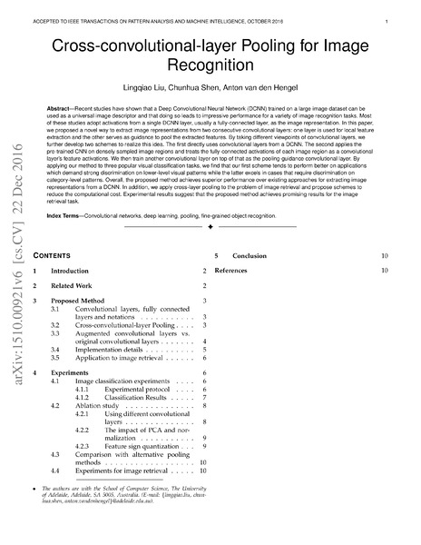
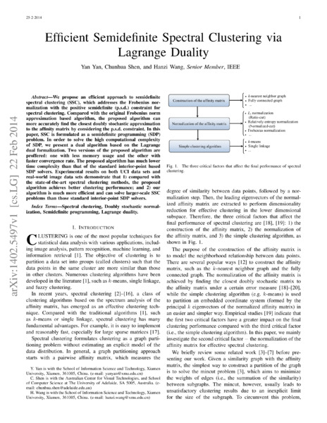

Google scholar (28924 citations) , DBLP , arXiv .
Journal
 Exploring the capacity of an orderless box discretization network for multi-orientation scene text detection
Exploring the capacity of an orderless box discretization network for multi-orientation scene text detection
 Y. Liu, T. He, H. Chen, X. Wang, C. Luo, S. Zhang, C. Shen, L. Jin.
International Journal of Computer Vision (IJCV), 2021.
arXivbibtexsearchproject webpage
Y. Liu, T. He, H. Chen, X. Wang, C. Luo, S. Zhang, C. Shen, L. Jin.
International Journal of Computer Vision (IJCV), 2021.
arXivbibtexsearchproject webpage Unsupervised scale-consistent depth learning from video
J. Bian, H. Zhan, N. Wang, Z. Li, L. Zhang, C. Shen, M. Cheng, I. Reid.
International Journal of Computer Vision (IJCV), 2021.
arXivbibtexsearchproject webpage
Unsupervised scale-consistent depth learning from video
J. Bian, H. Zhan, N. Wang, Z. Li, L. Zhang, C. Shen, M. Cheng, I. Reid.
International Journal of Computer Vision (IJCV), 2021.
arXivbibtexsearchproject webpageLearning deep part-aware embedding for person retrieval
Y. Zhao, C. Shen, X. Yu, H. Chen, Y. Gao, S. Xiong.
Pattern Recognition (PR), 2021.
bibtexsearchAn adversarial human pose estimation network injected with graph structure
L. Tian, P. Wang, G. Liang, C. Shen.
Pattern Recognition (PR), 2021.
bibtexsearchEffective training of convolutional neural networks with low-bitwidth weights and activations
B. Zhuang, J. Liu, M. Tan, L. Liu, I. Reid, C. Shen.
IEEE Transactions on Pattern Analysis and Machine Intelligence (TPAMI), 2021.
arXivbibtexsearchVirtual normal: enforcing geometric constraints for accurate and robust depth prediction
W. Yin, Y. Liu, C. Shen.
IEEE Transactions on Pattern Analysis and Machine Intelligence (TPAMI), 2021.
arXivbibtexsearchproject webpage PAN++: towards efficient and accurate end-to-end spotting of arbitrarily-shaped text
W. Wang, E. Xie, X. Li, X. Liu, D. Liang, Z. Yang, T. Lu, C. Shen.
IEEE Transactions on Pattern Analysis and Machine Intelligence (TPAMI), 2021.
arXivbibtexsearch
PAN++: towards efficient and accurate end-to-end spotting of arbitrarily-shaped text
W. Wang, E. Xie, X. Li, X. Liu, D. Liang, Z. Yang, T. Lu, C. Shen.
IEEE Transactions on Pattern Analysis and Machine Intelligence (TPAMI), 2021.
arXivbibtexsearch Towards end-to-end text spotting in natural scenes
P. Wang, H. Li, C. Shen.
IEEE Transactions on Pattern Analysis and Machine Intelligence (TPAMI), 2021.
arXivbibtexsearch
Towards end-to-end text spotting in natural scenes
P. Wang, H. Li, C. Shen.
IEEE Transactions on Pattern Analysis and Machine Intelligence (TPAMI), 2021.
arXivbibtexsearch Deep learning for anomaly detection: a review
G. Pang, C. Shen, L. Cao, A. van den Hengel.
ACM Computing Surveys (ACMSurvey), 2020.
arXivbibtexsearch
Deep learning for anomaly detection: a review
G. Pang, C. Shen, L. Cao, A. van den Hengel.
ACM Computing Surveys (ACMSurvey), 2020.
arXivbibtexsearchTowards light-weight portrait matting via parameter sharing
Y. Dai, H. Lu, C. Shen.
Computer Graphics Forum (CGF), 2020.
bibtexsearch Separating content from style using adversarial learning for recognizing text in the wild
C. Luo, Q. Lin, Y. Liu, L. Jin, C. Shen.
International Journal of Computer Vision (IJCV), 2020.
arXivbibtexsearch
Separating content from style using adversarial learning for recognizing text in the wild
C. Luo, Q. Lin, Y. Liu, L. Jin, C. Shen.
International Journal of Computer Vision (IJCV), 2020.
arXivbibtexsearchTasselNetv2: in-field counting of wheat spikes with context-augmented local regression networks
H. Xiong, Z. Cao, H. Lu, S. Madec, L. Liu, C. Shen.
Plant Methods (PLME), 2020.
bibtexsearchMobileFAN: transferring deep hidden representation for face alignment
Y. Zhao, Y. Liu, C. Shen, Y. Gao, S. Xiong.
Pattern Recognition (PR), 2020.
arXivbibtexsearch Part-guided attention learning for vehicle instance retrieval
X. Zhang, R. Zhang, J. Cao, D. Gong, M. You, C. Shen.
IEEE Transactions on Intelligent Transportation Systems (T-ITS), 2020.
arXivbibtexsearch
Part-guided attention learning for vehicle instance retrieval
X. Zhang, R. Zhang, J. Cao, D. Gong, M. You, C. Shen.
IEEE Transactions on Intelligent Transportation Systems (T-ITS), 2020.
arXivbibtexsearchA robust attentional framework for license plate recognition in the wild
L. Zhang, P. Wang, H. Li, Z. Li, C. Shen, Y. Zhang.
IEEE Transactions on Intelligent Transportation Systems (T-ITS), 2020.
bibtexsearchReal-time high-performance semantic image segmentation of urban street scenes
G. Dong, Y. Yan, C. Shen, H. Wang.
IEEE Transactions on Intelligent Transportation Systems (T-ITS), 2020.
bibtexsearchTowards effective deep embedding for zero-shot learning
L. Zhang, P. Wang, L. Liu, C. Shen, W. Wei, Y. Zhang, A. van den Hengel.
IEEE Transactions on Circuits and Systems for Video Technology (TCSVT), 2020.
bibtexsearchNSSNet: scale-aware object counting with non-scale suppression
L. Liu, Z. Cao, H. Lu, H. Xiong, C. Shen.
IEEE Transactions on Circuits and Systems for Video Technology (TCSVT), 2020.
bibtexsearch Viral pneumonia screening on chest x-ray images using confidence-aware anomaly detection
J. Zhang, Y. Xie, Z. Liao, G. Pang, J. Verjans, W. Li, Z. Sun, J. He, Y. Li, C. Shen, Y. Xia.
IEEE Transactions on Medical Imaging (TMI), 2020.
arXivbibtexsearch
Viral pneumonia screening on chest x-ray images using confidence-aware anomaly detection
J. Zhang, Y. Xie, Z. Liao, G. Pang, J. Verjans, W. Li, Z. Sun, J. He, Y. Li, C. Shen, Y. Xia.
IEEE Transactions on Medical Imaging (TMI), 2020.
arXivbibtexsearch A mutual bootstrapping model for automated skin lesion segmentation and classification
Y. Xie, J. Zhang, Y. Xia, C. Shen.
IEEE Transactions on Medical Imaging (TMI), 2020.
arXivbibtexsearch
A mutual bootstrapping model for automated skin lesion segmentation and classification
Y. Xie, J. Zhang, Y. Xia, C. Shen.
IEEE Transactions on Medical Imaging (TMI), 2020.
arXivbibtexsearchSESV: accurate medical image segmentation by predicting and correcting errors
Y. Xie, J. Zhang, H. Lu, C. Shen, Y. Xia.
IEEE Transactions on Medical Imaging (TMI), 2020.
bibtexsearchOPMP: an omni-directional pyramid mask proposal network for arbitrary-shape scene text detection
S. Zhang, Y. Liu, L. Jin, Z. Wei, C. Shen.
IEEE Transactions on Multimedia (TMM), 2020.
bibtexsearchJoint deep learning of facial expression synthesis and recognition
Y. Yan, Y. Huang, S. Chen, C. Shen, H. Wang.
IEEE Transactions on Multimedia (TMM), 2020.
bibtexsearchAccurate tensor completion via adaptive low-rank representation
L. Zhang, W. Wei, Q. Shi, C. Shen, A. van den Hengel, Y. Zhang.
IEEE Transactions on Neural Networks and Learning Systems (TNN), 2020.
bibtexsearchDeep clustering with sample-assignment invariance prior
X. Peng, H. Zhu, J. Feng, C. Shen, H. Zhang, J. Zhou.
IEEE Transactions on Neural Networks and Learning Systems (TNN), 2020.
bibtexsearchLearning deep gradient descent optimization for image deconvolution
D. Gong, Z. Zhang, Q. Shi, A. van den Hengel, C. Shen, Y. Zhang.
IEEE Transactions on Neural Networks and Learning Systems (TNN), 2020.
arXivbibtexsearch Real-time image smoothing via iterative least squares
W. Liu, P. Zhang, X. Huang, J. Yang, C. Shen, I. Reid.
ACM Transactions on Graphics (TOG), 2020.
arXivlinkbibtexsearchproject webpage
Real-time image smoothing via iterative least squares
W. Liu, P. Zhang, X. Huang, J. Yang, C. Shen, I. Reid.
ACM Transactions on Graphics (TOG), 2020.
arXivlinkbibtexsearchproject webpagePlenty is plague: fine-grained learning for visual question answering
Y. Zhou, R. Ji, J. Su, X. Sun, D. Meng, Y. Gao, C. Shen.
IEEE Transactions on Pattern Analysis and Machine Intelligence (TPAMI), 2020.
linkbibtexsearch Ordered or orderless: a revisit for video based person re-identification
L. Zhang, Z. Shi, J. Zhou, M. Cheng, Y. Liu, J. Bian, Z. Zeng, C. Shen.
IEEE Transactions on Pattern Analysis and Machine Intelligence (TPAMI), 2020.
arXivlinkbibtexsearchproject webpage
Ordered or orderless: a revisit for video based person re-identification
L. Zhang, Z. Shi, J. Zhou, M. Cheng, Y. Liu, J. Bian, Z. Zeng, C. Shen.
IEEE Transactions on Pattern Analysis and Machine Intelligence (TPAMI), 2020.
arXivlinkbibtexsearchproject webpage Index networks
H. Lu, Y. Dai, C. Shen, S. Xu.
IEEE Transactions on Pattern Analysis and Machine Intelligence (TPAMI), 2020.
arXivlinkbibtexsearchproject webpage
Index networks
H. Lu, Y. Dai, C. Shen, S. Xu.
IEEE Transactions on Pattern Analysis and Machine Intelligence (TPAMI), 2020.
arXivlinkbibtexsearchproject webpage Structured knowledge distillation for dense prediction
Y. Liu, C. Shun, J. Wang, C. Shen.
IEEE Transactions on Pattern Analysis and Machine Intelligence (TPAMI), 2020.
arXivlinkbibtexsearchproject webpage
Structured knowledge distillation for dense prediction
Y. Liu, C. Shun, J. Wang, C. Shen.
IEEE Transactions on Pattern Analysis and Machine Intelligence (TPAMI), 2020.
arXivlinkbibtexsearchproject webpage Adversarial learning of structure-aware fully convolutional networks for landmark localization
Y. Chen, C. Shen, H. Chen, X. Wei, L. Liu, J. Yang.
IEEE Transactions on Pattern Analysis and Machine Intelligence (TPAMI), 2020.
arXivlinkbibtexsearch
Adversarial learning of structure-aware fully convolutional networks for landmark localization
Y. Chen, C. Shen, H. Chen, X. Wei, L. Liu, J. Yang.
IEEE Transactions on Pattern Analysis and Machine Intelligence (TPAMI), 2020.
arXivlinkbibtexsearchImproving generative adversarial networks with local coordinate coding
J. Cao, Y. Guo, Q. Wu, C. Shen, J. Huang, M. Tan.
IEEE Transactions on Pattern Analysis and Machine Intelligence (TPAMI), 2020.
arXivbibtexsearchproject webpageAdaptive importance learning for improving lightweight image super-resolution network
L. Zhang, P. Wang, C. Shen, L. Liu, W. Wei, Y. Zhang, A. van den Hengel.
International Journal of Computer Vision (IJCV), 2019.
arXivbibtexsearchproject webpageAccurate imagery recovery using a multi-observation patch model
L. Zhang, W. Wei, Q. Shen, C. Shen, A. van den Hengel.
Information Sciences (IS), 2019.
bibtexsearchHeritage image annotation via collective knowledge
J. Zhang, Q. Wu, J. Zhang, C. Shen, J. Lu, Q. Wu.
Pattern Recognition (PR), 2019.
bibtexsearch Wider or deeper: revisiting the ResNet model for visual recognition
Z. Wu, C. Shen, A. van den Hengel.
Pattern Recognition (PR), 2019.
arXivbibtexsearch
Wider or deeper: revisiting the ResNet model for visual recognition
Z. Wu, C. Shen, A. van den Hengel.
Pattern Recognition (PR), 2019.
arXivbibtexsearchOrder-aware convolutional pooling for video based action recognition
P. Wang, L. Liu, C. Shen, H. Shen.
Pattern Recognition (PR), 2019.
bibtexsearchStructural analysis of attributes for vehicle re-identification and retrieval
Y. Zhao, C. Shen, H. Wang, S. Chen.
IEEE Transactions on Intelligent Transportation Systems (T-ITS), 2019.
bibtexsearchHuman detection aided by deeply learned semantic masks
X. Wang, C. Shen, H. Li, S. Xu.
IEEE Transactions on Circuits and Systems for Video Technology (TCSVT), 2019.
bibtexsearchEmbedding bilateral filter in least squares for efficient edge-preserving image smoothing
W. Liu, P. Zhang, X. Chen, C. Shen, X. Huang, J. Yang.
IEEE Transactions on Circuits and Systems for Video Technology (TCSVT), 2019.
bibtexsearchCounting objects by blockwise classification
L. Liu, H. Lu, H. Xiong, K. Xian, Z. Cao, C. Shen.
IEEE Transactions on Circuits and Systems for Video Technology (TCSVT), 2019.
bibtexsearchHyperspectral classification based on lightweight 3D-CNN with transfer learning
H. Zhang, Y. Li, Y. Jiang, P. Wang, Q. Shen, C. Shen.
IEEE Transactions on Geoscience and Remote Sensing (TGRS), 2019.
bibtexsearchSalient object detection with lossless feature reflection and weighted structural loss
P. Zhang, W. Liu, H. Lu, C. Shen.
IEEE Transactions on Image Processing (TIP), 2019.
bibtexsearch Piecewise classifier mappings: learning fine-grained learners for novel categories with few examples
X. Wei, P. Wang, L. Liu, C. Shen, J. Wu.
IEEE Transactions on Image Processing (TIP), 2019.
arXivbibtexsearch
Piecewise classifier mappings: learning fine-grained learners for novel categories with few examples
X. Wei, P. Wang, L. Liu, C. Shen, J. Wu.
IEEE Transactions on Image Processing (TIP), 2019.
arXivbibtexsearchMultiple instance learning with emerging novel class
X. Wei, H. Ye, X. Mu, J. Wu, C. Shen, Z. Zhou.
IEEE Transactions on Knowledge and Data Engineering (TKDE), 2019.
bibtexsearchAttention residual learning for skin lesion classification
J. Zhang, Y. Xie, Y. Xia, C. Shen.
IEEE Transactions on Medical Imaging (TMI), 2019.
bibtexsearch Decoupled spatial neural attention for weakly supervised semantic segmentation
T. Zhang, G. Lin, J. Cai, T. Shen, C. Shen, A. Kot.
IEEE Transactions on Multimedia (TMM), 2019.
arXivbibtexsearch
Decoupled spatial neural attention for weakly supervised semantic segmentation
T. Zhang, G. Lin, J. Cai, T. Shen, C. Shen, A. Kot.
IEEE Transactions on Multimedia (TMM), 2019.
arXivbibtexsearchRefineNet: multi-path refinement networks for dense prediction
G. Lin, F. Liu, A. Milan, C. Shen, I. Reid.
IEEE Transactions on Pattern Analysis and Machine Intelligence (TPAMI), 2019.
linkbibtexsearchproject webpagePytorch code is here.
Cluster sparsity field: an internal hyperspectral imagery prior for reconstruction
L. Zhang, W. Wei, Y. Zhang, C. Shen, A. van den Hengel, Q. Shi.
International Journal of Computer Vision (IJCV), 2018.
pdfbibtexsearch Reading car license plates using deep neural networks
H. Li, P. Wang, M. You, C. Shen.
Image and Vision Computing (IVC), 2018.
arXivbibtexsearch
Reading car license plates using deep neural networks
H. Li, P. Wang, M. You, C. Shen.
Image and Vision Computing (IVC), 2018.
arXivbibtexsearch Multi-label learning based deep transfer neural network for facial attribute classification
N. Zhuang, Y. Yan, S. Chen, H. Wang, C. Shen.
Pattern Recognition (PR), 2018.
arXivbibtexsearch
Multi-label learning based deep transfer neural network for facial attribute classification
N. Zhuang, Y. Yan, S. Chen, H. Wang, C. Shen.
Pattern Recognition (PR), 2018.
arXivbibtexsearchUnsupervised object discovery and co-localization by deep descriptor transforming
X. Wei, C. Zhang, J. Wu, C. Shen, Z. Zhou.
Pattern Recognition (PR), 2018.
arXivbibtexsearchAn extended filtered channel framework for pedestrian detection
M. You, Y. Zhang, C. Shen, X. Zhang.
IEEE Transactions on Intelligent Transportation Systems (T-ITS), 2018.
bibtexsearchTowards end-to-end car license plates detection and recognition with deep neural networks
H. Li, P. Wang, C. Shen.
IEEE Transactions on Intelligent Transportation Systems (T-ITS), 2018.
bibtexsearchUnsupervised domain adaptation using robust class-wise matching
L. Zhang, P. Wang, W. Wei, H. Lu, C. Shen, A. van den Hengel, Y. Zhang.
IEEE Transactions on Circuits and Systems for Video Technology (TCSVT), 2018.
bibtexsearchSemantics-aware visual object tracking
R. Yao, G. Lin, C. Shen, Y. Zhang, Q. Shi.
IEEE Transactions on Circuits and Systems for Video Technology (TCSVT), 2018.
bibtexsearch Pushing the limits of deep CNNs for pedestrian detection
Q. Hu, P. Wang, C. Shen, A. van den Hengel, F. Porikli.
IEEE Transactions on Circuits and Systems for Video Technology (TCSVT), 2018.
arXivbibtexsearch
Pushing the limits of deep CNNs for pedestrian detection
Q. Hu, P. Wang, C. Shen, A. van den Hengel, F. Porikli.
IEEE Transactions on Circuits and Systems for Video Technology (TCSVT), 2018.
arXivbibtexsearchAn embarrassingly simple approach to visual domain adaptation
H. Lu, C. Shen, Z. Cao, Y. Xiao, A. van den Hengel.
IEEE Transactions on Image Processing (TIP), 2018.
bibtexsearchproject webpageMulti-label image classification with regional latent semantic dependencies
J. Zhang, Q. Wu, C. Shen, J. Zhang, J. Lu.
IEEE Transactions on Multimedia (TMM), 2018.
arXivbibtexsearch Automatic image cropping for visual aesthetic enhancement using deep neural networks and cascaded regression
G. Guo, H. Wang, C. Shen, Y. Yan, H. Liao.
IEEE Transactions on Multimedia (TMM), 2018.
arXivbibtexsearch
Automatic image cropping for visual aesthetic enhancement using deep neural networks and cascaded regression
G. Guo, H. Wang, C. Shen, Y. Yan, H. Liao.
IEEE Transactions on Multimedia (TMM), 2018.
arXivbibtexsearch FVQA: fact-based visual question answering
P. Wang, Q. Wu, C. Shen, A. Dick, A. van den Hengel.
IEEE Transactions on Pattern Analysis and Machine Intelligence (TPAMI), 2018.
arXivbibtexsearch
FVQA: fact-based visual question answering
P. Wang, Q. Wu, C. Shen, A. Dick, A. van den Hengel.
IEEE Transactions on Pattern Analysis and Machine Intelligence (TPAMI), 2018.
arXivbibtexsearchOrdinal constraint binary coding for approximate nearest neighbor search
H. Liu, R. Ji, J. Wang, C. Shen.
IEEE Transactions on Pattern Analysis and Machine Intelligence (TPAMI), 2018.
pdfbibtexsearchVisual question answering: a survey of methods and datasets
Q. Wu, D. Teney, P. Wang, C. Shen, A. Dick, A. van den Hengel.
Computer Vision and Image Understanding (CVIU), 2017.
arXivbibtexsearch Structured learning of binary codes with column generation for optimizing ranking measures
G. Lin, F. Liu, C. Shen, J. Wu, H. Shen.
International Journal of Computer Vision (IJCV), 2017.
arXivbibtexsearchproject webpage
Structured learning of binary codes with column generation for optimizing ranking measures
G. Lin, F. Liu, C. Shen, J. Wu, H. Shen.
International Journal of Computer Vision (IJCV), 2017.
arXivbibtexsearchproject webpageRemoval of optically thick clouds from high-resolution satellite imagery using dictionary group learning and interdictionary nonlocal joint sparse coding
Y. Li, W. Li, C. Shen.
IEEE Journal of Selected Topics in Applied Earth Observations and Remote Sensing (JSTAEORS), 2017.
bibtexsearch TasselNet: counting maize tassels in the wild via local counts regression network
H. Lu, Z. Cao, Y. Xiao, B. Zhuang, C. Shen.
Plant Methods (PLME), 2017.
arXivbibtexsearch
TasselNet: counting maize tassels in the wild via local counts regression network
H. Lu, Z. Cao, Y. Xiao, B. Zhuang, C. Shen.
Plant Methods (PLME), 2017.
arXivbibtexsearchDeep linear discriminant analysis on Fisher networks: a hybrid architecture for person re-identification
L. Wu, C. Shen, A. van den Hengel.
Pattern Recognition (PR), 2017.
arXivbibtexsearchMask-CNN: localizing parts and selecting descriptors for bird species categorization
X. Wei, C. Xie, J. Wu, C. Shen.
Pattern Recognition (PR), 2017.
bibtexsearchLearning discriminative trajectorylet detector sets for accurate skeleton-based action recognition
R. Qiao, L. Liu, C. Shen, A. van den Hengel.
Pattern Recognition (PR), 2017.
arXivbibtexsearchDeep CNNs with spatially weighted pooling for fine-grained car recognition
Q. Hu, H. Wang, T. Li, C. Shen.
IEEE Transactions on Intelligent Transportation Systems (T-ITS), 2017.
bibtexsearch Crowd counting via weighted VLAD on dense attribute feature maps
B. Sheng, C. Shen, G. Lin, J. Li, W. Yang, C. Sun.
IEEE Transactions on Circuits and Systems for Video Technology (TCSVT), 2017.
arXivbibtexsearch
Crowd counting via weighted VLAD on dense attribute feature maps
B. Sheng, C. Shen, G. Lin, J. Li, W. Yang, C. Sun.
IEEE Transactions on Circuits and Systems for Video Technology (TCSVT), 2017.
arXivbibtexsearchEstimating depth from monocular images as classification using deep fully convolutional residual networks
Y. Cao, Z. Wu, C. Shen.
IEEE Transactions on Circuits and Systems for Video Technology (TCSVT), 2017.
arXivbibtexsearch Discriminative training of deep fully-connected continuous CRF with task-specific loss
F. Liu, G. Lin, C. Shen.
IEEE Transactions on Image Processing (TIP), 2017.
arXivbibtexsearch
Discriminative training of deep fully-connected continuous CRF with task-specific loss
F. Liu, G. Lin, C. Shen.
IEEE Transactions on Image Processing (TIP), 2017.
arXivbibtexsearch Exploiting depth from single monocular images for object detection and semantic segmentation
Y. Cao, C. Shen, H. Shen.
IEEE Transactions on Image Processing (TIP), 2017.
arXivbibtexsearch
Exploiting depth from single monocular images for object detection and semantic segmentation
Y. Cao, C. Shen, H. Shen.
IEEE Transactions on Image Processing (TIP), 2017.
arXivbibtexsearch Structured learning of tree potentials in CRF for image segmentation
F. Liu, G. Lin, R. Qiao, C. Shen.
IEEE Transactions on Neural Networks and Learning Systems (TNN), 2017.
arXivbibtexsearch
Structured learning of tree potentials in CRF for image segmentation
F. Liu, G. Lin, R. Qiao, C. Shen.
IEEE Transactions on Neural Networks and Learning Systems (TNN), 2017.
arXivbibtexsearchImage captioning and visual question answering based on attributes and external knowledge
Q. Wu, C. Shen, P. Wang, A. Dick, A. van den Hengel.
IEEE Transactions on Pattern Analysis and Machine Intelligence (TPAMI), 2017.
arXivbibtexsearch Compositional model based Fisher vector coding for image classification
L. Liu, P. Wang, C. Shen, L. Wang, A. van den Hengel, C. Wang, H. Shen.
IEEE Transactions on Pattern Analysis and Machine Intelligence (TPAMI), 2017.
arXivbibtexsearch
Compositional model based Fisher vector coding for image classification
L. Liu, P. Wang, C. Shen, L. Wang, A. van den Hengel, C. Wang, H. Shen.
IEEE Transactions on Pattern Analysis and Machine Intelligence (TPAMI), 2017.
arXivbibtexsearchCross-convolutional-layer pooling for image recognition
L. Liu, C. Shen, A. van den Hengel.
IEEE Transactions on Pattern Analysis and Machine Intelligence (TPAMI), 2017.
arXivlinkbibtexsearch Exploring context with deep structured models for semantic segmentation
G. Lin, C. Shen, A. van den Hengel, I. Reid.
IEEE Transactions on Pattern Analysis and Machine Intelligence (TPAMI), 2017.
arXivbibtexsearch
Exploring context with deep structured models for semantic segmentation
G. Lin, C. Shen, A. van den Hengel, I. Reid.
IEEE Transactions on Pattern Analysis and Machine Intelligence (TPAMI), 2017.
arXivbibtexsearchStructured learning of metric ensembles with application to person re-identification
S. Paisitkriangkrai, L. Wu, C. Shen, A. van den Hengel.
Computer Vision and Image Understanding (CVIU), 2016.
arXivbibtexsearch Unsupervised feature learning for dense correspondences across scenes
C. Zhang, C. Shen, T. Shen.
International Journal of Computer Vision (IJCV), 2016.
arXivbibtexsearchproject webpage
Unsupervised feature learning for dense correspondences across scenes
C. Zhang, C. Shen, T. Shen.
International Journal of Computer Vision (IJCV), 2016.
arXivbibtexsearchproject webpage Efficient semidefinite branch-and-cut for MAP-MRF inference
P. Wang, C. Shen, A. van den Hengel, P. Torr.
International Journal of Computer Vision (IJCV), 2016.
arXivlinkbibtexsearch
Efficient semidefinite branch-and-cut for MAP-MRF inference
P. Wang, C. Shen, A. van den Hengel, P. Torr.
International Journal of Computer Vision (IJCV), 2016.
arXivlinkbibtexsearch Mining mid-level visual patterns with deep CNN activations
Y. Li, L. Liu, C. Shen, A. van den Hengel.
International Journal of Computer Vision (IJCV), 2016.
arXivlinkbibtexsearchproject webpage
Mining mid-level visual patterns with deep CNN activations
Y. Li, L. Liu, C. Shen, A. van den Hengel.
International Journal of Computer Vision (IJCV), 2016.
arXivlinkbibtexsearchproject webpage Online unsupervised feature learning for visual tracking
F. Liu, C. Shen, I. Reid, A. van den Hengel.
Image and Vision Computing (IVC), 2016.
arXivbibtexsearch
Online unsupervised feature learning for visual tracking
F. Liu, C. Shen, I. Reid, A. van den Hengel.
Image and Vision Computing (IVC), 2016.
arXivbibtexsearchCanonical principal angles correlation analysis for two-view data
S. Wang, J. Lu, X. Gu, C. Shen, R. Xia, J. Yang.
Journal of Visual Communication and Image Representation (JVCIR), 2016.
linkbibtexsearchFace image classification by pooling raw features
F. Shen, C. Shen, X. Zhou, Y. Yang, H. Shen.
Pattern Recognition (PR), 2016.
arXivbibtexsearchproject webpageFace recognition using linear representation ensembles
H. Li, F. Shen, C. Shen, Y. Yang, Y. Gao.
Pattern Recognition (PR), 2016.
arXivlinkbibtexsearchFast detection of multiple objects in traffic scenes with a common detection framework
Q. Hu, S. Paisitkriangkrai, C. Shen, A. van den Hengel, F. Porikli.
IEEE Transactions on Intelligent Transportation Systems (T-ITS), 2016.
bibtexsearchPart-based robust tracking using online latent structured learning
R. Yao, Q. Shi, C. Shen, Y. Zhang, A. van den Hengel.
IEEE Transactions on Circuits and Systems for Video Technology (TCSVT), 2016.
linkbibtexsearch Temporal pyramid pooling based convolutional neural network for action recognition
P. Wang, Y. Cao, C. Shen, L. Liu, H. Shen.
IEEE Transactions on Circuits and Systems for Video Technology (TCSVT), 2016.
arXivbibtexsearch
Temporal pyramid pooling based convolutional neural network for action recognition
P. Wang, Y. Cao, C. Shen, L. Liu, H. Shen.
IEEE Transactions on Circuits and Systems for Video Technology (TCSVT), 2016.
arXivbibtexsearchDictionary learning for promoting structured sparsity in hyerpsectral compressive sensing
L. Zhang, W. Wei, Y. Zhang, C. Shen, A. van den Hengel, Q. Shi.
IEEE Transactions on Geoscience and Remote Sensing (TGRS), 2016.
bibtexsearchScalable linear visual feature learning via online parallel nonnegative matrix factorization
X. Zhao, X. Li, Z. Zhang, C. Shen, L. Gao, X. Li.
IEEE Transactions on Neural Networks and Learning Systems (TNN), 2016.
linkbibtexsearch Large-scale binary quadratic optimization using semidefinite relaxation and applications
P. Wang, C. Shen, A. van den Hengel, P. Torr.
IEEE Transactions on Pattern Analysis and Machine Intelligence (TPAMI), 2016.
arXivlinkbibtexsearch
Large-scale binary quadratic optimization using semidefinite relaxation and applications
P. Wang, C. Shen, A. van den Hengel, P. Torr.
IEEE Transactions on Pattern Analysis and Machine Intelligence (TPAMI), 2016.
arXivlinkbibtexsearchPedestrian detection with spatially pooled features and structured ensemble learning
S. Paisitkriangkrai, C. Shen, A. van den Hengel.
IEEE Transactions on Pattern Analysis and Machine Intelligence (TPAMI), 2016.
arXivlinkbibtexsearchproject webpage A generalized probabilistic framework for compact codebook creation
L. Liu, L. Wang, C. Shen.
IEEE Transactions on Pattern Analysis and Machine Intelligence (TPAMI), 2016.
arXivlinkbibtexsearch
A generalized probabilistic framework for compact codebook creation
L. Liu, L. Wang, C. Shen.
IEEE Transactions on Pattern Analysis and Machine Intelligence (TPAMI), 2016.
arXivlinkbibtexsearch Learning depth from single monocular images using deep convolutional neural fields
F. Liu, C. Shen, G. Lin, I. Reid.
IEEE Transactions on Pattern Analysis and Machine Intelligence (TPAMI), 2016.
arXivlinkbibtexsearchproject webpage
Learning depth from single monocular images using deep convolutional neural fields
F. Liu, C. Shen, G. Lin, I. Reid.
IEEE Transactions on Pattern Analysis and Machine Intelligence (TPAMI), 2016.
arXivlinkbibtexsearchproject webpage Online metric-weighted linear representations for robust visual tracking
X. Li, C. Shen, A. Dick, Z. Zhang, Y. Zhuang.
IEEE Transactions on Pattern Analysis and Machine Intelligence (TPAMI), 2016.
arXivbibtexsearch
Online metric-weighted linear representations for robust visual tracking
X. Li, C. Shen, A. Dick, Z. Zhang, Y. Zhuang.
IEEE Transactions on Pattern Analysis and Machine Intelligence (TPAMI), 2016.
arXivbibtexsearchExtrinsic methods for coding and dictionary learning on Grassmann manifolds
M. Harandi, R. Hartley, C. Shen, B. Lovell, C. Sanderson.
International Journal of Computer Vision (IJCV), 2015.
arXivbibtexsearchproject webpage CRF learning with CNN features for image segmentation
F. Liu, G. Lin, C. Shen.
Pattern Recognition (PR), 2015.
arXivbibtexsearch
CRF learning with CNN features for image segmentation
F. Liu, G. Lin, C. Shen.
Pattern Recognition (PR), 2015.
arXivbibtexsearch Hashing on nonlinear manifolds
F. Shen, C. Shen, Q. Shi, A. van den Hengel, Z. Tang, H. Shen.
IEEE Transactions on Image Processing (TIP), 2015.
arXivbibtexsearchproject webpage
Hashing on nonlinear manifolds
F. Shen, C. Shen, Q. Shi, A. van den Hengel, Z. Tang, H. Shen.
IEEE Transactions on Image Processing (TIP), 2015.
arXivbibtexsearchproject webpage A computational model of the short-cut rule for 2D shape decomposition
L. Luo, C. Shen, X. Liu, C. Zhang.
IEEE Transactions on Image Processing (TIP), 2015.
arXivbibtexsearch
A computational model of the short-cut rule for 2D shape decomposition
L. Luo, C. Shen, X. Liu, C. Zhang.
IEEE Transactions on Image Processing (TIP), 2015.
arXivbibtexsearchWorst-case linear discriminant analysis as scalable semidefinite feasibility problems
H. Li, C. Shen, A. van den Hengel, Q. Shi.
IEEE Transactions on Image Processing (TIP), 2015.
arXivbibtexsearchproject webpage Supervised hashing using graph cuts and boosted decision trees
G. Lin, C. Shen, A. van den Hengel.
IEEE Transactions on Pattern Analysis and Machine Intelligence (TPAMI), 2015.
arXivlinkbibtexsearchproject webpage
Supervised hashing using graph cuts and boosted decision trees
G. Lin, C. Shen, A. van den Hengel.
IEEE Transactions on Pattern Analysis and Machine Intelligence (TPAMI), 2015.
arXivlinkbibtexsearchproject webpage Fast approximate
Fast approximate  minimization: Speeding up robust regression
F. Shen, C. Shen, R. Hill, A. van den Hengel, Z. Tang.
Computational Statistics and Data Analysis (CSDA), 2014.
arXivbibtexsearch
minimization: Speeding up robust regression
F. Shen, C. Shen, R. Hill, A. van den Hengel, Z. Tang.
Computational Statistics and Data Analysis (CSDA), 2014.
arXivbibtexsearch Multiple kernel learning in the primal for multi-modal Alzheimer's disease classification
F. Liu, L. Zhou, C. Shen, J. Yin.
IEEE Journal of Biomedical and Health Informatics (JBHI), 2014.
arXivlinkbibtexsearch
Multiple kernel learning in the primal for multi-modal Alzheimer's disease classification
F. Liu, L. Zhou, C. Shen, J. Yin.
IEEE Journal of Biomedical and Health Informatics (JBHI), 2014.
arXivlinkbibtexsearchOnline published at IEEE: 10 October 2013.
Multiple kernel clustering based on centered kernel alignment
Y. Lu, L. Wang, J. Lu, J. Yang, C. Shen.
Pattern Recognition (PR), 2014.
bibtexsearchEfficient semidefinite spectral clustering via Lagrange duality
Y. Yan, C. Shen, H. Wang.
IEEE Transactions on Image Processing (TIP), 2014.
arXivbibtexsearch Large-margin learning of compact binary image encodings
S. Paisitkriangkrai, C. Shen, A. van den Hengel.
IEEE Transactions on Image Processing (TIP), 2014.
arXivbibtexsearch
Large-margin learning of compact binary image encodings
S. Paisitkriangkrai, C. Shen, A. van den Hengel.
IEEE Transactions on Image Processing (TIP), 2014.
arXivbibtexsearch Characterness: An indicator of text in the wild
Y. Li, W. Jia, C. Shen, A. van den Hengel.
IEEE Transactions on Image Processing (TIP), 2014.
arXivlinkbibtexsearchproject webpage
Characterness: An indicator of text in the wild
Y. Li, W. Jia, C. Shen, A. van den Hengel.
IEEE Transactions on Image Processing (TIP), 2014.
arXivlinkbibtexsearchproject webpage Context-aware hypergraph construction for robust spectral clustering
X. Li, W. Hu, C. Shen, A. Dick, Z. Zhang.
IEEE Transactions on Knowledge and Data Engineering (TKDE), 2014.
arXivlinkbibtexsearch
Context-aware hypergraph construction for robust spectral clustering
X. Li, W. Hu, C. Shen, A. Dick, Z. Zhang.
IEEE Transactions on Knowledge and Data Engineering (TKDE), 2014.
arXivlinkbibtexsearch Asymmetric pruning for learning cascade detectors
S. Paisitkriangkrai, C. Shen, A. van den Hengel.
IEEE Transactions on Multimedia (TMM), 2014.
arXivlinkbibtexsearch
Asymmetric pruning for learning cascade detectors
S. Paisitkriangkrai, C. Shen, A. van den Hengel.
IEEE Transactions on Multimedia (TMM), 2014.
arXivlinkbibtexsearch Efficient dual approach to distance metric learning
C. Shen, J. Kim, F. Liu, L. Wang, A. van den Hengel.
IEEE Transactions on Neural Networks and Learning Systems (TNN), 2014.
arXivbibtexsearch
Efficient dual approach to distance metric learning
C. Shen, J. Kim, F. Liu, L. Wang, A. van den Hengel.
IEEE Transactions on Neural Networks and Learning Systems (TNN), 2014.
arXivbibtexsearchA scalable stage-wise approach to large-margin multi-class loss based boosting
S. Paisitkriangkrai, C. Shen, A. van den Hengel.
IEEE Transactions on Neural Networks and Learning Systems (TNN), 2014.
arXivlinkpdfbibtexsearch RandomBoost: Simplified multi-class boosting through randomization
S. Paisitkriangkrai, C. Shen, Q. Shi, A. van den Hengel.
IEEE Transactions on Neural Networks and Learning Systems (TNN), 2014.
arXivlinkbibtexsearch
RandomBoost: Simplified multi-class boosting through randomization
S. Paisitkriangkrai, C. Shen, Q. Shi, A. van den Hengel.
IEEE Transactions on Neural Networks and Learning Systems (TNN), 2014.
arXivlinkbibtexsearchA hierarchical word-merging algorithm with class separability measure
L. Wang, L. Zhou, C. Shen, L. Liu, H. Liu.
IEEE Transactions on Pattern Analysis and Machine Intelligence (TPAMI), 2014.
pdfbibtexsearchStructBoost: Boosting methods for predicting structured output variables
C. Shen, G. Lin, A. van den Hengel.
IEEE Transactions on Pattern Analysis and Machine Intelligence (TPAMI), 2014.
arXivlinkpdfbibtexsearch Training effective node classifiers for cascade classification
C. Shen, P. Wang, S. Paisitkriangkrai, A. van den Hengel.
International Journal of Computer Vision (IJCV), 2013.
arXivlinkbibtexsearch
Training effective node classifiers for cascade classification
C. Shen, P. Wang, S. Paisitkriangkrai, A. van den Hengel.
International Journal of Computer Vision (IJCV), 2013.
arXivlinkbibtexsearchFully corrective boosting with arbitrary loss and regularization
C. Shen, H. Li, A. van den Hengel.
Neural Networks (NN), 2013.
pdfbibtexsearchApproximate least trimmed sum of squares fitting and applications in image analysis
F. Shen, C. Shen, A. van den Hengel, Z. Tang.
IEEE Transactions on Image Processing (TIP), 2013.
linkpdfbibtexsearchVisual tracking with spatio-temporal Dempster-Shafer information fusion
X. Li, A. Dick, C. Shen, Z. Zhang, A. van den Hengel, H. Wang.
IEEE Transactions on Image Processing (TIP), 2013.
pdfbibtexsearch A survey of appearance models in visual object tracking
X. Li, W. Hu, C. Shen, Z. Zhang, A. Dick, A. van den Hengel.
ACM Transactions on Intelligent Systems and Technology (TIST), 2013.
arXivbibtexsearch
A survey of appearance models in visual object tracking
X. Li, W. Hu, C. Shen, Z. Zhang, A. Dick, A. van den Hengel.
ACM Transactions on Intelligent Systems and Technology (TIST), 2013.
arXivbibtexsearchShape similarity analysis by self-tuning locally constrained mixed-diffusion
L. Luo, C. Shen, C. Zhang, A. van den Hengel.
IEEE Transactions on Multimedia (TMM), 2013.
pdfbibtexsearch Incremental learning of 3D-DCT compact representations for robust visual tracking
X. Li, A. Dick, C. Shen, A. van den Hengel, H. Wang.
IEEE Transactions on Pattern Analysis and Machine Intelligence (TPAMI), 2013.
arXivlinkpdfbibtexsearchproject webpage
Incremental learning of 3D-DCT compact representations for robust visual tracking
X. Li, A. Dick, C. Shen, A. van den Hengel, H. Wang.
IEEE Transactions on Pattern Analysis and Machine Intelligence (TPAMI), 2013.
arXivlinkpdfbibtexsearchproject webpage Positive semidefinite metric learning using boosting-like algorithms
C. Shen, J. Kim, L. Wang, A. van den Hengel.
Journal of Machine Learning Research (JMLR), 2012.
arXivlinkbibtexsearchproject webpage
Positive semidefinite metric learning using boosting-like algorithms
C. Shen, J. Kim, L. Wang, A. van den Hengel.
Journal of Machine Learning Research (JMLR), 2012.
arXivlinkbibtexsearchproject webpageFast and robust object detection using asymmetric totally-corrective boosting
P. Wang, C. Shen, N. Barnes, H. Zheng.
IEEE Transactions on Neural Networks and Learning Systems (TNN), 2012.
pdfbibtexsearchUBoost: Boosting with the Universum
C. Shen, P. Wang, F. Shen, H. Wang.
IEEE Transactions on Pattern Analysis and Machine Intelligence (TPAMI), 2012.
pdfbibtexsearchEfficiently learning a detection cascade with sparse eigenvectors
C. Shen, S. Paisitkriangkrai, J. Zhang.
IEEE Transactions on Image Processing (TIP), 2011.
arXivlinkbibtexsearch Incremental training of a detector using online sparse eigen-decomposition
S. Paisitkriangkrai, C. Shen, J. Zhang.
IEEE Transactions on Image Processing (TIP), 2011.
arXivlinkbibtexsearch
Incremental training of a detector using online sparse eigen-decomposition
S. Paisitkriangkrai, C. Shen, J. Zhang.
IEEE Transactions on Image Processing (TIP), 2011.
arXivlinkbibtexsearch Interactive color image segmentation with linear programming
H. Li, C. Shen.
Machine Vision and Applications (MVA), 2010.
linkpdfbibtexsearch
Interactive color image segmentation with linear programming
H. Li, C. Shen.
Machine Vision and Applications (MVA), 2010.
linkpdfbibtexsearchGeneralized kernel-based visual tracking
C. Shen, J. Kim, H. Wang.
IEEE Transactions on Circuits and Systems for Video Technology (TCSVT), 2010.
arXivlinkpdfbibtexsearchproject webpageFeature selection with redundancy-constrained class separability
L. Zhou, L. Wang, C. Shen.
IEEE Transactions on Neural Networks (TNN), 2010.
linkbibtexsearch Boosting through optimization of margin distributions
C. Shen, H. Li.
IEEE Transactions on Neural Networks (TNN), 2010.
arXivlinkbibtexsearch
Boosting through optimization of margin distributions
C. Shen, H. Li.
IEEE Transactions on Neural Networks (TNN), 2010.
arXivlinkbibtexsearchScalable large-margin Mahalanobis distance metric learning
C. Shen, J. Kim, L. Wang.
IEEE Transactions on Neural Networks (TNN), 2010.
arXivlinkbibtexsearch On the dual formulation of boosting algorithms
C. Shen, H. Li.
IEEE Transactions on Pattern Analysis and Machine Intelligence (TPAMI), 2010.
arXivlinkbibtexsearch
On the dual formulation of boosting algorithms
C. Shen, H. Li.
IEEE Transactions on Pattern Analysis and Machine Intelligence (TPAMI), 2010.
arXivlinkbibtexsearch Performance evaluation of local features in human classification and detection
S. Paisitkriangkrai, C. Shen, J. Zhang.
IET Computer Vision (IETCV), 2008.
linkpdfbibtexsearch
Performance evaluation of local features in human classification and detection
S. Paisitkriangkrai, C. Shen, J. Zhang.
IET Computer Vision (IETCV), 2008.
linkpdfbibtexsearchInvited submission, special issue of DICTA2007.
 Supervised dimensionality reduction via sequential semidefinite programming
C. Shen, H. Li, M. Brooks.
Pattern Recognition (PR), 2008.
linkpdfbibtexsearch
Supervised dimensionality reduction via sequential semidefinite programming
C. Shen, H. Li, M. Brooks.
Pattern Recognition (PR), 2008.
linkpdfbibtexsearch Fast pedestrian detection using a cascade of boosted covariance features
S. Paisitkriangkrai, C. Shen, J. Zhang.
IEEE Transactions on Circuits and Systems for Video Technology (TCSVT), 2008.
linkpdfbibtexsearch
Fast pedestrian detection using a cascade of boosted covariance features
S. Paisitkriangkrai, C. Shen, J. Zhang.
IEEE Transactions on Circuits and Systems for Video Technology (TCSVT), 2008.
linkpdfbibtexsearch Fast global kernel density mode seeking: applications to localization and tracking
C. Shen, M. Brooks, A. van den Hengel.
IEEE Transactions on Image Processing (TIP), 2007.
linkpdfbibtexsearch
Fast global kernel density mode seeking: applications to localization and tracking
C. Shen, M. Brooks, A. van den Hengel.
IEEE Transactions on Image Processing (TIP), 2007.
linkpdfbibtexsearchAdaptive object tracking based on an effective appearance filter
H. Wang, D. Suter, K. Schindler, C. Shen.
IEEE Transactions on Pattern Analysis and Machine Intelligence (TPAMI), 2007.
linkpdfbibtexsearchFeatured article of September issue 2007.
Active control of radiation from a piston set in a rigid sphere
Z. Lin, J. Lu, C. Shen, X. Qiu, B. Xu.
Journal of Acoustical Society of America (JASA), 2004.
linkpdfbibtexsearch Lattice form adaptive infinite impulse response filtering algorithm for active noise control
J. Lu, C. Shen, X. Qiu, B. Xu.
Journal of Acoustical Society of America (JASA), 2003.
linkpdfbibtexsearch
Lattice form adaptive infinite impulse response filtering algorithm for active noise control
J. Lu, C. Shen, X. Qiu, B. Xu.
Journal of Acoustical Society of America (JASA), 2003.
linkpdfbibtexsearch
Conference
Diverse knowledge distillation for end-to-end person search
X. Zhang, X. Wang, J. Bian, C. Shen, M. You.
Proc. AAAI Conference on Artificial Intelligence (AAAI’21), 2021.
bibtexsearchSA-BNN: state-aware binary neural network
C. Liu, P. Chen, B. Zhuang, C. Shen, B. Zhang, W. Ding.
Proc. AAAI Conference on Artificial Intelligence (AAAI’21), 2021.
bibtexsearchDeep reasoning network for few-shot semantic segmentation
Y. Zhuge, C. Shen.
Proc. ACM International Conference on Multimedia (ACMMM’21), 2021.
bibtexsearch